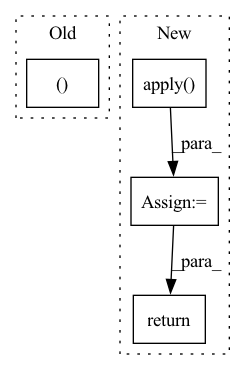

Pattern ID :17029

Before Change
real_feat_indices = np.random.permutation(total_instance)[:num_feats]
real_feats = real_feats.detach().cpu().numpy()[real_feat_indices].astype(np.float64)
real_labels = real_labels.detach().cpu().numpy()[real_feat_indices]
return real_feats, real_feat_indices, real_labels
After Change
real_labels = torch.cat(real_labels, dim=0)
if DDP:
real_feats = torch.cat(losses.GatherLayer.apply(real_feats), dim=0)
real_probs = torch.cat(losses.GatherLayer.apply(real_probs), dim=0)
real_labels = torch.cat(losses.GatherLayer.apply(real_labels), dim=0)
real_feat_indices = np.random.permutation(num_feats)
real_feats = real_feats.detach().cpu().numpy()[real_feat_indices].astype(np.float64)
real_probs = real_probs.detach().cpu().numpy()[real_feat_indices].astype(np.float64)
real_labels = real_labels.detach().cpu().numpy()[real_feat_indices]
return real_feats, real_probs, real_feat_indices, real_labels
In pattern: SUPERPATTERN
Frequency: 3
Non-data size: 4
Instances
Fragment ID: 57160568
Project Name: postech-cvlab/pytorch-studiogan
Commit Name: e9b9424ea383996bb391e5c68e5c50071b818637
Time: 2022-03-30
Author: first287@naver.com
File Name: src/metrics/features.py
M Class Name: AnonimousClass
N Class Name: AnonimousClass
M Method Name: stack_features(8)
N Method Name: stack_features(8)
M Parent Class:
N Parent Class:
M File Name: src/metrics/features.py
N File Name: src/metrics/features.py
M Start Line: 106
M End Line: 134
N Start Line: 110
N End Line: 138
'>
Before Change
counterfactuals = []
for i, row in instances.iterrows():
_, counterfactual = self.counterfactual_search(instances.values[i, :])
counterfactuals.append(counterfactual)
counterfactuals_df = check_counterfactuals(self._mlmodel, counterfactuals)
After Change
df_enc_norm_fact = df_enc_norm_fact.reset_index(drop=True)
// find counterfactuals
df_cfs = df_enc_norm_fact.apply(
lambda x: self._counterfactual_search(x), axis=1, raw=True
)
df_cfs = check_counterfactuals(self._mlmodel, df_cfs)
return df_cfs
'>
Fragment ID: 57160569
Project Name: indyfree/carla
Commit Name: ad6d72b67aba0a89b8f54c6c377f9e5b4b1366eb
Time: 2021-06-30
Author: sbielawski@web.de
File Name: carla/recourse_methods/catalog/cem/model.py
M Class Name: CEM
N Class Name: CEM
M Method Name: get_counterfactuals(2)
N Method Name: get_counterfactuals(2)
M Parent Class: RecourseMethod
N Parent Class: RecourseMethod
M File Name: carla/recourse_methods/catalog/cem/model.py
N File Name: carla/recourse_methods/catalog/cem/model.py
M Start Line: 506
M End Line: 520
N Start Line: 523
N End Line: 531
'>
Before Change
self.blocks = nn.ModuleList([ReversibleBlock(f, g) for (f, g) in blocks])
def forward(self, x, arg_route = (True, True), **kwargs):
f_args, g_args = map(lambda route: kwargs if route else {}, arg_route)
block_kwargs = {"f_args": f_args, "g_args": g_args}
return _ReversibleFunction.apply(x, self.blocks, block_kwargs)
After Change
layers_and_args = layer_drop(layers_and_args, self.layer_dropout)
blocks, args = map(lambda ind: list(map(itemgetter(ind), layers_and_args)), (0, 1))
out = _ReversibleFunction.apply(x, blocks, args)
return torch.stack(out.chunk(2, dim=-1)).sum(dim=0)
'>
Fragment ID: 57160570
Project Name: lucidrains/linear-attention-transformer
Commit Name: fa23ce09a98a63d26116e3935ad5902cf705255d
Time: 2020-06-04
Author: lucidrains@gmail.com
File Name: linear_attention_transformer/reversible.py
M Class Name: ReversibleSequence
N Class Name: ReversibleSequence
M Method Name: forward(2)
N Method Name: forward(3)
M Parent Class: nn.Module
N Parent Class: nn.Module
M File Name: linear_attention_transformer/reversible.py
N File Name: linear_attention_transformer/reversible.py
M Start Line: 118
M End Line: 121
N Start Line: 161
N End Line: 174